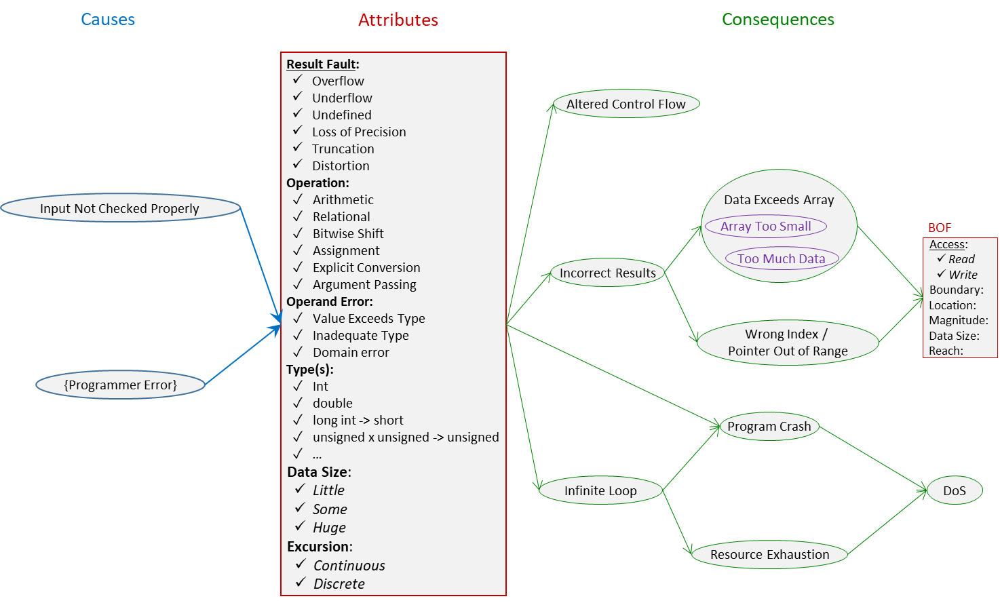

Arithmetic or Conversion Fault (ARC) Class
Definition
We define Arithmetic or Conversion Fault (ARC) as:
Operations in software produce a faulty result due to conversions between
primitive
types, range violations, or domain violations.
Range violation and domain violation include overflow, underflow, wrap around, round off,
divide by zero, and negative
shift.
Overflow is when the combined value of the two operands exceeds the range of the typed
operator1. Range violation also includes use of the wrong typed operation2. Conversions between primitive types, range violations, and domain violations
are
all considered to be operand faults.
Operations on pointers (memory addresses) are not ARC3.
Floating point overflow and underflow, conversion between floating point types, and
conversion between floating point and integer types are ARC. Numerical analysis errors, such as loss
of precision, failure to converge, and
conditioning problems, are not ARC.
Function calls with incorrect arguments, such as memcpy() with overlapping ranges,
are ARG, not ARC.
The model is that an operation causes (implicit) conversion of its operands’ values,
then the operation is performed. How does argument passing and the C cast fit this
model? Argument passing can be seen as an implicit conversion then a null operation
(or, equivalently, an identity operation is performed). The C cast can be seen as
explicit conversion then null.
Type
Taxonomy
Fig. 1 depicts ARC causes, attributes and consequences.

Fig 1.
Arithmetic or Conversion Fault (ARC) Class
- click on image for detailed view.
Attributes
The attributes of ARC are:
Result Fault4 – Overflow, Underflow, Undefined, Loss of
Precision, Truncation, Distortion.
This indicates what resulted because of the fault.
Wraparound is expressed as either overflow (value became too large) or underflow (value
became less than the least expressible value).
Overflow and Underflow are when the result won’t fit in the destination. Distortion
are when the result does fit, but the value is changed, for example, unsignedVar = negativeValue;
Some examples for each value of the Result Fault attribute are as follows:
- Overflow – e.g. INT_MAX + 1 or -LONG_MIN)
- Underflow – e.g. UINT_MIN - 1 or float becomes very tiny, e.g., MIN_POS_FLOAT/2)
- Loss of Precision – e.g.
c = (f - 32) * (5/9) – often called rounding. Includes
truncation toward zero or fractional part discarded
if the programmer expected rounding,
- Truncation – that is, cut off information that does not fit, e.g.
int = long)
- Distortion – e.g.
unsigned = negative_number
Operation5 – Arithmetic, Relational, Bitwise Shift, Assignment, Explicit
Conversion, Argument
Passing.
Examples of arithmetic operations are: +, /, %,
--, unary -. Examples of relational operations are <,
!=. Bitwise shifts are >> and <<. Examples of assignments
are =, +=. Explicit conversion is also called cast. Argument passing is in a
function call.
Operand Error6 – Value Exceeds Type, Inadequate Type, Domain error
This specifies what the problem is with the operands. It is typically a relationship
between operands of the operation, not just the characteristic of one operand.
Value Exceeds Type is a superset of Value Too Big and Type Too Small – yields
Overflow, Underflow, or Truncation. Inadequate Type yields Loss of Precision, Underflow, or
Distortion. Domain Error yields Undefined.
Type(s)7 – int, double, long int
-> short, unsigned x unsigned -> unsigned, etc.
This is the type(s) of the operand(s) and/or the result.
Magnitude8 – Small, Moderate, Large.
This indicates how far out of range it was. Small is one or two. Moderate is half
a dozen. Large is hundreds.
Excursion9 – Continuous, Discrete.
This indicates whether the out-of-range condition occurred because of continuous steps,
which went out, or it was one step.
Consequences
The graph of consequences shows that BOF is not a direct consequence. Incorrect Result may cause
Data Exceeds Array or Wrong Index / Pointer Out Of Range, which may cause BOF. Also
Infinite Loop can lead to Program Crash or Resource Exposition, and eventually to
Denial of Service (DoS).
Sites
Any use of the operators listed under the Operation attribute, which include explicit
conversion (cast) and passing arguments in a function call.
The conditional operator (?:) is not a site. A common type is chosen for the result of the
operator by performing
the usual arithmetic conversion on the two operands of the colon (that is, for a ? b : c, it is
between b and c), but this never results in ARC. The C bitwise operators &, |,
~, and ^ are not sites. The reasons are the same as others. The C comma operator
(,) never causes conversion, and therefore is not a site. The C logical operators, which
are &&, ||, and !, never cause conversion, and therefore are
not sites.
Relational perators (e.g. <, !=) are sites. For instance, in the
following:
i is converted to float, but a 32-bit int may be too big to be represented correctly
as a 32-bit float.
CERT INT30-C points out that some operation/operand combinations never have wrap-around,
thus
may be excluded:
- Operations on a variable and
0 (except division or remainder by 0)
- Subtracting any variable from its type's maximum; for example, any unsigned int may
safely be subtracted from UINT_MAX
- Multiplying any variable by
1
- Division or remainder, as long as the divisor is nonzero
- Right-shifting any type by any number no larger than the type’s size; for example,
UINT_MAX >> x is valid as long as 0 <= x < 32 (assuming that
the precision of unsigned int is 32 bits)
“The only integer type conversions that are guaranteed to be safe for all data values
and all possible conforming implementations are conversions of an integral value to
a wider type of the same signedness [according to] The C Standard, subclause 6.3.1.3
[ISO/IEC 9899:2011], …”
Related BF Classes
BF classes related to ARC are: BOF, <<content to be added>>.
Related CWEs, SFP, and SEI/CERT Rules and Recommendations
Related CWEs are: CWE-128, CWE-136, CWE-189, CWE-190, CWE-191, CWE-192, CWE-194, CWE-195, CWE-196, CWE-197, CWE-369, CWE-681, CWE-682, CWE-704.
Related SFP secondary cluster is Glitch in Computation (CWE-998).
Related SEI/CERT Rules and Recommendations are: Rule
04 (C) (aka CWE-738),
INT30-C, INT31-C, INT32-C, INT33-C, INT34-C, INT35-C, INT36-C; Rule 5 (C) (aka CWE-739), FLP03-C, FLP32-C, FLP34-C, FLP36-C; Rule 07 (C) (aka CWE-741), STR34-C, STR37-C; Rec. 04 (C)INT01-C, INT02-C, INT04-C, INT05-C, INT07-C,INT08-C, INT10-C, INT12-C, INT13-C, INT14-C, INT15-C, INT16-C, INT18-C; Rec. 08 (C) (aka CWE-742), MEM07-C; Rule 03 (C++) (aka CWE-872), INT50-CPP; Rule 03 (Java) (aka CWE-848), NUM00-J, NUM01-J, NUM02-J, NUM03-J, NUM04-J, NUM08-J, NUM12-J, NUM13-J, NUM14-J.
BF Descriptions of ARC Related CWEs are provided here.
Application
Application examples are provided here.
Notes
On the term "primitive types"
• C11 calls them "basic types"
• Java SE 8 calls them "primitive types"
(https://docs.oracle.com/javase/specs/jls/se8/jls8.pdf 1.1 Organization of the
Specification "The primitive types are ... various sizes
of two's-complement integers, single- and double-precision IEEE 754 standard floating-point
numbers, a boolean type, and a Unicode character char type." Accessed January 2017)
• C# 4.0 calls them "simple types"
(https://www.microsoft.com/en-us/download/details.aspx?id=7029 1.3 Types and variables
The table shows that simple types comprise Signed integral,
Unsigned integral, Unicode characters, IEEE floating point, High-precision decimal,
and Boolean. Simple types do not include Enum types. Accessed January 2017)
Justification: We use “operations” instead of “an operation” because we often consider
the assignment operator together with the binary (and other) operators that produce
the result, e.g., a = b + c;
Explanation: Although we use the plural (e.g. “operations”, “conversions”, “primitive
types”), there may be only one operator or there may be only one conversion of the
value of one operand.
Explanation: Except in case of range and domain violations (e.g. overflow because
of addition or undefined because of divide by zero), the fault occurs during the conversion,
not during the operation. Thus the class might be called “Faulty Conversion”. But
that name could lead readers to think only of the explicit cast operator, and the
vast majority of faulty conversions are implicit conversions associated with operations.
Explanation: If the programmer meant to subtract, but wrote “+”, it is a bug, not
ARC.
Additional note: The C standard [ISO/IEC 9899:2011, 7.12.1] distinguishes three types
of faults: domain error, pole error, and range error. We lump these all into range
or domain violation. (There is a summary of these three in SEI/CERT Rule FLP32-C.)
_______________________________
1Overflow can be viewed as a domain violation. Think of a binary
operator, say +, as a unary operator (call it pair+) that takes a pair (of
numbers). Just as division handles many numbers, but not zero,
this pair+ operator handles many inputs (pairs of numbers), but not all. The domain of
pair+ is then the pairs of numbers whose sum does not overflow.
The plus operator, +, represents a set of summing operations. Different operations are chosen
depending
on operand types. Thus + in a + b is taken to mean
short+short if a and b are short,
int+int if one is short and the other is int, and so forth.
Each operation produces a result of a certain type.
Note: The compiler inserts a conversion in some cases. Consider this example:
The expression becomes ((int)a) int+int b. That is, a is converted to an
int, then the int+int addition operation is performed.
2Use of an operation of the wrong type can be viewed as a range
violation. Consider
this example of a faulty Fahrenheit to Centigrade conversion:
float c = (f - 32) * 5/9;
Since both operands of “/” are integers, the compiler selects integer division, resulting
in Loss of Precision fault. The division takes place, the result is between the maximum
and minimum integer, but the operation does not produce the resolution (precision)
desired. This occurs in CVE-2016-5223.
Conceivably, there could be too much resolution. Consider this example of computing the number of
reams of paper needed:
constant int sheetsPerReam = 500;
int reams = +(sheetsNeeded + sheetsPerReam - 1) / sheetsPerReam;
In C99 and later, integer division truncates toward zero. If floating point division
were done, then rounded, it would not do what we want. So sheetsNeeded must be int
or cast to int. If sheetsNeeded changed to be float, floating point division is performed
instead of integer division.
3Why are pointer (memory address) operations not ARC?
Observe that only relational, equality, and only a few additive operations (e.g.
>, !=, +, --) are defined for pointers because pointer arithmetic mimics array accesses.
In particular, pointer / int and pointer + pointer are not defined. (However,
pointer - pointeris defined if the pointers are to the same allocation.)
4Although the attribute is named OperaTION, usually the operaTOR
is written. We use
“operator” to mean the syntactic representation and “operation” to mean the function
that is executed. For example, the operator “+” corresponds to the addition operation.
The distinction is like that between a numeral and a number.
5The attribute “Result Fault” indicates what resulted because of
the fault.
Wraparound is expressed as either overflow (value became too large) or underflow (value
became less than the least expressible value).
6Value Exceeds Type is a superset comprised of two conditions: Value
Too Big and Type Too Small. How does one determine which condition it is? One must consider
the context, that
is, the programmer’s intent or what a correct program should do. In some cases, the
operand value was just too big and should have been rejected (suggests Input Not Checked Properly).
In other cases, the result should have been handled, so the type should have been
larger (suggests Programmer Error).
7 Unary -, ++, etc. may overflow. So some ARCs have
only one operand and one type.
Type(s) is an informative attribute. It typically doesn’t describe the fault, just gives additional
information that may be available. For instance, it documents
the types that are involved.
8The actual values of the attribute are continuous; partitioning
the values into three
discrete intervals is somewhat arbitrary. These intervals are copied from BOF and
make sense in explaining why some protection or detection schemes work with some BOFs
and not others. It’s not clear if these intervals are meaningful for ARC or, indeed,
whether the attribute is useful at all.
9 Increments, especially in a loop, indicate continuous. For example,
Other computations indicate discrete excursion. For example (from CVE-2016-2326):
pts + pkt->duration * 10000
Again, it is not clear if this attribute is useful.
References